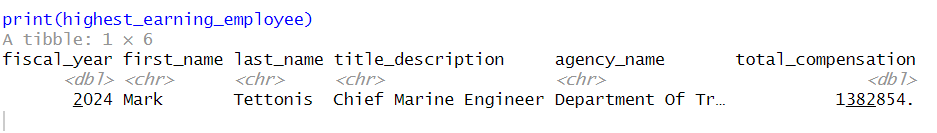

NYC Payroll Policy Analysis
1 Introduction
This report analyzes NYC payroll data to evaluate potential policies aimed at reducing taxpayer expenses. We examine three policies:
1. Capping salaries at the mayoral level
2. Increasing staffing to reduce overtime
3. A custom policy proposal
The analysis is based on historical payroll data, and all calculations are made using standardized assumptions.
2 Load Data and Libraries
2.1 Data Preparation
library(tidyverse)
library(lubridate)
library(scales)
library(DT)
2.2 Load Data
payroll_data <- read_csv("nyc_payroll_data.csv")
2.3 Inspect Data
payroll_data <- payroll_data %>%
mutate(
agency_name = str_to_title(agency_name),
last_name = str_to_title(last_name),
first_name = str_to_title(first_name),
work_location_borough = str_to_title(work_location_borough),
title_description = str_to_title(title_description),
leave_status = str_to_title(leave_status_as_of_june_30)
)
payroll_data <- payroll_data %>%
mutate(salary = as.numeric(salary),
reg_hours = as.numeric(reg_hours),
ot_hours = as.numeric(ot_hours))
glimpse(payroll_data)
3 Mayor Eric Adams Payroll Analysis
3.1 Mayor Eric Adams’s Salary
mayor_data <- payroll_data %>%
filter(str_detect( first_name, "Eric") & str_detect( last_name , "Adams")) %>%
select( fiscal_year , title_description , agency_name , base_salary ) %>%
arrange( fiscal_year )
mayor_data %>%
mutate( base_salary = dollar( base_salary )) %>%
datatable(options = list( searching = FALSE, paging = FALSE, info = FALSE
))
3.2 Calculation of Total Compensation
payroll_data <- payroll_data %>%
mutate (
total_compensation = case_when(
pay_basis == "per Annum" ~ base_salary,
pay_basis == "per Hour" ~ base_salary * regular_hours + (base_salary * 1.5 * ot_hours),
pay_basis == "per Day" ~ base_salary * (regular_hours / 7.5),
TRUE ~ base_salary ) )
datatable(
payroll_data %>%
select(first_name, last_name, agency_name, title_description, pay_basis, base_salary, regular_hours, ot_hours, total_compensation) %>%
arrange(desc(total_compensation)) %>% s
lice_head(n = 10),
options = list(scrollX = TRUE)
)

4 Key Payroll Analysis
This section answers critical payroll-related questions using NYC Payroll Data.
- Which job title has the highest base rate of pay? (If needed, assume a standard 2000-hour work year and no overtime.)
highest_base_rate <- payroll_data %>%
mutate(hourly_rate = base_salary / 2000) %>%
arrange(desc(hourly_rate)) %>%
select(title_description, agency_name, hourly_rate) %>% slice(1)
highest_base_rate
Result:
- Which individual & in what year had the single highest city total payroll (regular and overtime combined)?
highest_earning_employee <- payroll_data %>%
mutate(total_compensation = base_salary + total_ot_paid + total_other_pay) %>%
arrange(desc(total_compensation)) %>%
select(fiscal_year, first_name, last_name, title_description, agency_name, total_compensation) %>%
slice(1)
print(highest_earning_employee)
Result:

- Which individual worked the most overtime hours in this data set?
most_overtime_employee <- payroll_data %>%
arrange(desc(ot_hours)) %>%
select(fiscal_year, first_name, last_name, title_description, agency_name, ot_hours) %>%
slice(1)
print(most_overtime_employee)
Result:
- Which agency has the highest average total annual payroll (base and overtime pay per employee)?
highest_avg_payroll_agency <- payroll_data %>%
group_by(agency_name) %>%
summarize(avg_total_pay = mean(base_salary + total_ot_paid + total_other_pay, na.rm = TRUE)) %>%
arrange(desc(avg_total_pay)) %>% slice(1)
highest_avg_payroll_agency
Result:
- Which agency has the most employees on payroll in each year?
most_employees_per_year <- payroll_data %>%
group_by(fiscal_year, agency_name) %>%
summarize(employee_count = n()) %>%
arrange(fiscal_year, desc(employee_count)) %>%
group_by(fiscal_year) %>% slice(1)
most_employees_per_year
Result:
- Which agency has the highest overtime usage (compared to regular hours)?
highest_overtime_usage <- payroll_data %>%
mutate(overtime_ratio = ot_hours / (2000 + ot_hours)) %>%
group_by(agency_name) %>%
summarize(avg_overtime_ratio = mean(overtime_ratio, na.rm = TRUE)) %>%
arrange(desc(avg_overtime_ratio)) %>% slice(1)
highest_overtime_usage
Result:
- What is the average salary of employees who work outside the five boroughs? (That is, whose work_location_borough is not one of the five counties.)
avg_salary_outside_nyc <- payroll_data %>%
filter(!work_location_borough %in% c("Manhattan", "Brooklyn", "Queens", "Bronx", "Staten Island")) %>%
summarize(avg_salary = mean(base_salary, na.rm = TRUE))
avg_salary_outside_nyc
Result:

- How much has the city’s aggregate payroll grown over the past 10 years?
payroll_growth <- payroll_data %>%
group_by(fiscal_year) %>% summarize(total_payroll = sum(base_salary + total_ot_paid + total_other_pay, na.rm = TRUE)) %>%
arrange(fiscal_year) %>%
mutate(payroll_growth = (total_payroll / lag(total_payroll) - 1) * 100,
payroll_growth = paste0(round(payroll_growth, 2), "%"))
payroll_growth
Result:
5 Policy Analysis
5.1 Policy 1: Capping Salaries at Mayoral Level
5.1.1 Compute the Mayor’s salary per year
mayor_salary <- payroll_data %>%
filter(title_description == "Mayor") %>%
select(fiscal_year, total_compensation)
high_salaries <- payroll_data %>%
5.1.2 Identify High Earners
high_salaries <- payroll_data %>%
inner_join(mayor_salary, by = "fiscal_year", suffix = c("_emp", "_mayor")) %>%
filter(total_compensation_emp > total_compensation_mayor)
Result:
5.1.3 Total Savings
total_savings <- sum(high_salaries$total_compensation_emp - high_salaries$total_compensation_mayor, na.rm = TRUE)
datatable( high_salaries %>% select(fiscal_year, first_name, last_name, title_description, agency_name, total_compensation_emp, total_compensation_mayor) %>%
slice_head(n = 100), options = list(scrollX = TRUE)
Result:
5.2 Policy 2: Increasing Staffing to Reduce Overtime Expenses
5.2.1 Calculate total overtime
overtime_reduction <- payroll_data %>%
group_by(agency_name, title_description) %>%
summarize( total_overtime_hours = sum(ot_hours, na.rm = TRUE), full_time_equivalent_needed = total_overtime_hours / 2000 ) %>% arrange(desc(total_overtime_hours))
datatable(overtime_reduction, options = list(scrollX = TRUE))
Result:
5.2.2 Total Potential Savings
overtime_savings <- payroll_data %>%
group_by(agency_name, title_description) %>%
summarize( overtime_cost = sum(1.5 * base_salary * ot_hours, na.rm = TRUE),
regular_cost = sum(base_salary * (ot_hours / 40), na.rm = TRUE),
potential_savings = overtime_cost - regular_cost ) %>%
arrange(desc(potential_savings))
datatable(overtime_savings, options = list(scrollX = TRUE))
Result:
5.2.3 Total Agency Savings
agency_savings <- overtime_savings %>%
group_by(agency_name) %>%
summarize( total_overtime_cost = sum(overtime_cost, na.rm = TRUE),
total_regular_cost = sum(regular_cost, na.rm = TRUE),
total_savings = sum(potential_savings, na.rm = TRUE) ) %>%
arrange(desc(total_savings))
datatable(agency_savings, options = list(scrollX = TRUE))
Result:
5.3 Policy 3: Overtime Reduction Through Strategy Hiring
5.3.1 Overview
Many NYC agencies rely heavily on overtime (OT) to compensate for staffing shortages, significantly inflating payroll costs. Instead of paying excessive overtime wages, the city could hire additional employees to reduce OT dependency.
Analysis Steps:
- Identify High-Overtime Employees
- Compare Costs
- Potential Savings
- Recommendation
5.3.2 Identify High-Overtime Employees
Find employees with excessive overtime hours (e.g., more than 500 OT hours per year).
high_overtime_employees <- payroll_data %>%
filter(ot_hours > 500) %>%
group_by(title_description, agency_name) %>%
summarize( avg_overtime_hours = mean(ot_hours, na.rm = TRUE),
total_overtime_pay = sum(total_ot_paid, na.rm = TRUE), num_high_overtime_employees = n(),
avg_base_salary = mean(base_salary, na.rm = TRUE) ) %>%
arrange(desc(total_overtime_pay))
Result:
5.3.3 Compare Costs of Overtime vs. Hiring
Assuming a standard 2,000-hour work year
estimated_new_hires <- high_overtime_employees %>%
mutate( equivalent_full_time_positions = round(avg_overtime_hours / 2000, 1), total_new_hire_salary = equivalent_full_time_positions * avg_base_salary ) %>%
select(agency_name, title_description, num_high_overtime_employees, equivalent_full_time_positions, total_overtime_pay, total_new_hire_salary)
Result:
5.3.4 Calculate Potential Savings
Compare the total overtime cost vs. the cost of hiring new employees
potential_savings <- estimated_new_hires %>%
mutate(savings = total_overtime_pay - total_new_hire_salary) %>%
arrange(desc(savings))
datatable(potential_savings, options = list(scrollX = TRUE))
Result:

5.3.5 Identify Agencies with Highest OT Dependency
Find agencies where overtime reliance is highest
overtime_by_agency <- payroll_data %>%
group_by(agency_name) %>%
summarize( total_overtime_pay = sum(total_ot_paid, na.rm = TRUE),
total_base_salary = sum(base_salary, na.rm = TRUE),
ot_to_salary_ratio = total_ot_paid / base_salary ) %>%
arrange(desc(ot_to_salary_ratio))
Result:
5.3.6 Recommendations
- Agencies with the highest OT-to-salary ratios should prioritize hiring over paying OT.
- Job roles with excessive OT hours (e.g., NYPD, FDNY, sanitation workers) should be assessed for staffing shortages.
- The city could cap annual OT hours per employee and use the savings to hire additional workers
6 Conclusion & Final Recommendation
Each policy presents unique benefits and trade-offs. Based on financial impact and feasibility:
Best Policy Choice: Policy III (Strategic Overtime Hiring).
Secondary Option: Policy II (Broad Hiring to Cut Overtime).
Least Effective: Policy I (Salary Cap), due to talent retention concerns.
Implement Policy 3 with phased hiring & overtime monitoring ( Final Recommendation )